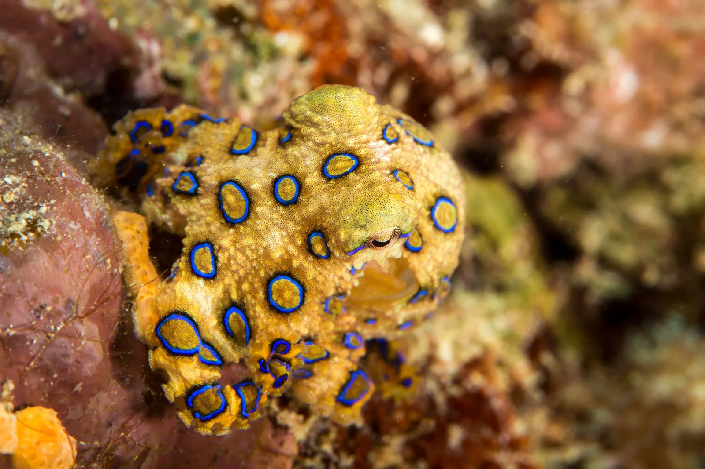

Description and Overview
The blue-ringed octopus is an extremely venomous species of cephalopod that make up the genus Hapalochlaena. There are four species in this genus: the greater blue-ringed octopus, the southern blue-ringed octopus, the blue-lined octopus, and H. nierstraszi, the latter being a very rare specimen that was caught only once in 1938 and once in 2013.
Blue-ringed octopuses are very small, measuring from 5-8 inches. They are pale yellow and have blue and black/brown rings (or stripes) that flare when threatened. Due to their small size, their bites are often painless, but their venom contains tetrodotoxin, histamine, tryptamine, octopamine, taurine, acetylcholine, and dopamine1, but the main neurotoxin in its venom is tetrodotoxin, which is 1000 times more toxic than cyanide. This causes respiratory arrest, blindness, and heart failure, but death from the blue-ringed octopus usually comes from suffocation due to paralysis of the diaphragm. It's estimated that one blue-ringed octopus carries enough venom to kill over 20 humans.
Habitat
Despite their deadly reputation, blue-ringed octopuses are actually very docile and prefer solitude. (Their bites are thought to be defense against being picked up or stepped on.) They often hide in crevices, under rocks, and inside seashells. Most blue-ringed octopuses are found around Australia, but have been found off the coast of Japan and Korea. The greater blue ringed-octopus are widespread in the Indo-West Pacific waters, ranging from Sri Lanka to the Phillipines to the coasts off Australia. The rare H. nierstraszi specimens were caught in the Bay of Bengal in the northeastern Indian Ocean.
Diet
Like other cephalopods, the blue-ringed octopus preys on crustaceans, small fish, and mollusks. Their strong beak can crack shells and exoskeletons. Some blue-ringed octopuses even go after bivalves and use their leftover shells as shelter.
Their venom also comes in handy when it comes to hunting for food. The southern blue-ringed octopus uses its venom to hunt its prey by releasing its venom into the water. It paralyzes the animal and allows the blue-ringed octopus to move in for the kill. They also inject venom into their prey when biting through its shell.